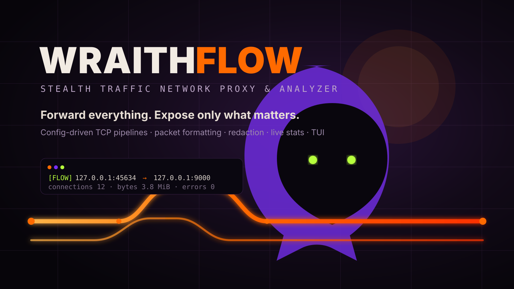
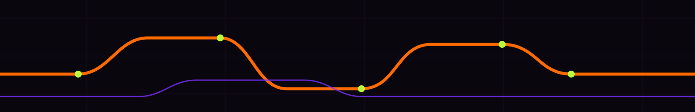

Config-driven pipelines
Any number of [[proxies]] in one file. Each pipeline is its own async task — one crashing doesn't take the others down. No protocol awareness required: full-duplex, byte-for-byte.
See exactly what crosses the wire
Per-pipeline output profiles — hexdump, pretty JSON, raw, base64 — with redact to mask secrets and highlight to call out what matters. Colors come from the shared cybercore CYBERGRID palette, not hardcoded ANSI.

Live stats, no journalctl scraping
Every pipeline tracks connections, bytes each way, and errors — printed on an interval whether or not payload logging is on, and available on demand over a read-only Unix control socket.
wf-tui — the live dashboard
A separate binary over that same socket, so the daemon itself never carries ratatui/crossterm's dependency tree. Symlinked into ~/.local/bin next to wraithflow — no cargo run -p needed day to day.
Install & run
Prebuilt binaries for Linux (x86_64/aarch64) and macOS (x86_64/aarch64), checksum-verified before they touch disk. No release for your platform, or no curl? cargo install --git works from source on anything.
Everything, at a glance
- Any number of pipelines, one config file
- Full-duplex, protocol-unaware forwarding
- hexdump / JSON / raw / base64 output
- Redact + highlight, substring-filtered
- Per-pipeline min-size / direction filters
- Live [STATS] line, configurable interval
- Read-only Unix control socket, 0600
- wf-tui — live terminal dashboard
--adminservice control, no sudo dance- Graceful shutdown, drains in-flight conns
- Fails fast on bad config before binding
- CYBERGRID-themed color output